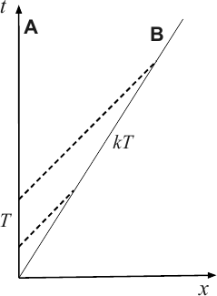
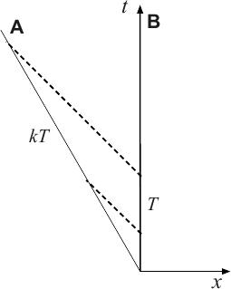

Special relativity
Newtonian mechanics ruled supreme for centuries, describing motion from every day events to the planets orbiting the Sun. However, as experimenters started probing higher velocities (or, equivalently, energies) it became clear that the theory had problems. In particular, at the end of the 19th century there was an apparent conflict between Newtonian physics and the theory of electromagnetism developed by James Clerk Maxwell and Michael Faraday. This new theory suggested that the speed of light (in vacuum) ought to be constant, regardless of the motion of the observer. This (obviously) does not agree with the Galilean transformations we have considered.
The theory of electromagnetism demonstrates that light is a wave. In order to make sense of this, physicists introduced a medium for these waves to propagate through 1 : the luminiferous ether. However, experiments aimed at demonstrating the absolute motion of the Earth through the ether failed (most famously, the effort by Michelson and Morley in 1881). As a resolution, physicists introduced two, seemingly ad hoc, hypotheses:
-
rigid bodies are contracted in the direction of travel, and
-
moving clocks appear to run slow.
Mathematically, the results were contained in (fairly) simple relations called the Lorentz transformation. The effects would impact on any effort to detect the relative motion with respect to the ether, basically cancelling the effects one might intuitively expect.
This description was logically consistent, but there was no way of verifying the assumptions. At least not until 1905, when Albert Einstein provided an elegant derivation based on two postulates. The first is known as the principle of relativity. The second concerns the speed of light, which is taken to be a universal constant. This assumption has a range of curious implications – it forces us to abandon the concept of universal time (which is key to Newtonian mechanics). We also lose the notion of simultaneity. Events may appear to happen at the same time according to one observer, but not according to another. This may seems confusing, but the results are quite easy to demonstrate. We will do this using the k-calculus that was developed by Hermann Bondi in the 1950s.
5.1 k-calculus
Let us start with some familiar. An event in space and time simply refers to something happening. Everyone can agree on what the event is (what happened), but since different observers may use their own clocks (which may not be synchronised) and measuring devices (perhaps rulers with different scales or simply a different assumed origin), they will not (typically) agree on when and where the event took place. There is nothing mysterious about this.
Mathematically, we can illustrate the collection of events throughout history in a spacetime diagram, like that in figure 5.1. This would (obviously) involve recording how objects move – how they trace out their individual world lines through space and time. By following each world line we track the object’s history. Now, let us introduce the notion of an observer. This can be any object that can be equipped with a clock and a ruler, which he/she carries along on the journey through spacetime. Each individual combination of clock and ruler makes up the observer’s frame of reference. In Newtonian mechanics, we assume that if two observers synchronise their clock then they will continue to agree on the time of all events. Time is absolute.
In order to develop Einstein’s picture, let us start with the principle of relativity:
-
All inertial observers are equivalent.
What does this mean? Well, it says that, if one observer carries out an experiment and discovers a physical laws, then other observes carrying out the same experiment should agree on this law. At least as long as the observers have uniform relative velocity – they must not accelerate because this brings additional forces into play. However, there is more to it than that. In reality we can not determine an absolute position in space or time, we can only ever measure positions relative to some origin. Similarly, a velocity of a body is always relative to some other. Position and velocity are both relative. This is important. Any experiment our observer may carry out must involve some kind of observation. Therefore the statement of the principle of relative does not refer to the results of particular experiments being equal. This follows by logic.
We have suggested that we can use a set of clock and rulers to measure events. Let us now dispense of the rulers and make use of the second postulate, the constant speed of light 2 . This leads us to (using terminology that may have seemed modern in the 1950s, but which seems unfashionable today) the so-called radar method. If we know the speed of light, then we can easily figure out the position in space of any event (let’s call it ). Simply assuming that the event is associated with a “mirror” we can bounce a light signal off it. In order to avoid confusion, we will work in two dimensions, time and space. This means that we can think of the observers as sitting along a straight line, each with a clock and a mirror (or a flashlight). A given observer (let’s call him/her , which seems quite imaginative) then carries out measurements like in figure 5.2, where the event could be on another observer’s () world line. As we are focussing on inertial observers, this second world line will be a straight line at some angle in the coordinate system associated with . The angle simply depends on the relative velocity, see figures 5.3 and 5.4. As the relative speed approaches that of light, the angle approaches .
In this picture, the spatial distance to the event in figure 5.2 is inferred as half the difference between the times of emission and reception. In order to make the analysis simple, it is common to use units such that the speed of light . That is, we measure distance as time intervals (e.g. in light seconds) and we have
Similarly, it is easy to see that the time associated with the event will be
An immediate implication of this is that we have to abandon the notion of simultaneity. This is easily illustrated with a thought experiment (the kind of which Einstein is famous for). Let us consider a passenger on a train, equipped with two flashlights (and no hesitation using them). Let the person stand in the middle of the carriage and shine the two flashlights towards the front and back of the carriage. The ask, when do the light rays hit the two walls. Our observer would answer that this happens at the same time – the light rays have to travel the same distance at the same (fixed) speed. The events are simultaneous. This is the situation illustrated in the left panel of figure 5.3. Let us now consider the experiment from the point of view of another observer, standing on a platform as the train whizzes by. Because the train is moving, the two walls will move as the light flashes travel from emission to impact. As a result the distance to the back wall is shorter than that to the front wall. This means that observer will not agree. The light hits the back wall first. Basically, the order of events is relative depending on who carries out the observation. This is an important lesson.
 
Let us now relate measurements by two observers moving relative to one another, as in figure 5.4. In order to do this, we assume that the time intervals involved are proportional to one another. This makes sense since the relative velocity is fixed. In effect, if observer measures an interval (say between two flashes of a flash light or two ticks on a clock), the measures , where is constant. This is the fundamental assumption of k-calculus. Note that, from the point of view of the other observer () measured time intervals must be related by the same constant of proportionality, as in the right panel of figure 5.4. Of course, if moves in the positive -direction relative to , then moves in the negative direction relative to . It is important to keep this in mind.
To make progress, consider the set up in figure 5.5. Assume that the two observers synchronise their clocks at the origin (when they pass through the same point in space). Comparing this figure to figure 5.2, and making use of the inferred relations between time intervals it is easy to see that we have and . As varies, this allows us to work out the coordinates associated with events along the world line of . We have
and
However, we can relate the result to the relative velocity, since
Solving for in terms of (noting that must be greater than 1 if and move apart), we have
As we will see later, this is the relativistic formula for the Doppler shift. If moves away from then which leads to frequencies being shifted towards the “red”, while they shift towards the “blue” when moves towards .
As a slight extension of the example, let us ask how velocities add in this picture. In this case we need to introduce a third observer . This also involves extra factors. We denote these as , and as in figure 5.6. However, these factors can not be independent. We must have
Re-writing this relation in terms of the three relative velocities (which involves a bit of algebra) we arrive at the composition law for velocities:
This is very important result. In the limit of low velocities ( etcetera as we assume units where ), we have
This accords with our usual (Newtonian) experience. Velocities add. However, now replace one of the observers with a light signal. Taking we see that the resulting speed relative to is
This is new. We learn that we cannot exceed the speed of light by adding velocities – there is an upper speed limit. If we add two velocities, which are both below the speed of light, we arrive at a composite velocity which is also below the speed of light.
5.2 The Lorentz transformation
We are now ready to get to the core argument – the derivation of the Lorentz transformation. In order to discuss this, we consider the setting represented in figure 5.7. We let the event have coordinates with respect to observer and with respect to observer . We know from before that observer has to send out a light signal at in order to observe the event at (see the symmetry in figure 5.2). Similarly, observer has to send out a light signal at in order to observe the event at (it helps to ask what figure 5.2 would look like according to ).
Assuming that the observers have synchronised their clocks at the origin (as before), we know from the k-calculus argument that
and
Re-arranging these relations (and making use of the result for in terms of ) we arrive at
where
This is the Lorentz transformation. The derivation is surprisingly simple – once we have laid the foundations by discussing measurements carried out by observers in relative motion.
It is worth noting (and quite easy to show) that the quantity is invariant under the Lorentz transformation. That is, we have
This will be important later.
5.3 Implications: length contraction and time dilation
With the Lorentz transformation in hand, let us consider a couple of implications. The basic story is simple – we have to accept that space and time are flexible, and that measurements depend on the motion of the observer.
First of all, consider a rod moving with speed in the -direction relative to a fixed observer, as in figure 5.8. If we measure the length of the rod at rest (in the moving frame), we have
But this is not the length measured by the fixed non-moving observer. Instead, this observer measures
However, if this measurement is done at time (on the non-moving clock), then we know that
and
so we find
The moving rod appears to be contracted in the direction of travel.
Now consider a moving clock. With the clock at rest in the primed frame (the same as in figure 5.8), two ticks of the clock are given by coordinates and (say). Transforming this into the non-moving frame 3 we have
and
This means that
Time intervals on the moving clock appear longer, so the clock seems to run slow. This is called time dilation.
It is also instructive to consider the Doppler shift. We know from everyday experience that the frequency of a moving object (say the siren of an ambulance) is affected by relative motion. To see how this comes about, consider a source emitting waves with wavelength in the frame of the emitter. Suppose the source is a flashing light. If two flashes are emitted a time apart, then the second flash has to travel a distance further in order to reach a non-moving observer. This means that is will arrive a time later. That is, the flashes arrive with a time difference
Translating this into wavelength (inverse of frequency=proportional to time interval) we see that
This is an entirely classical effect. Of course, it will be affected by relativity. Adding in the time dilation the time difference will be measured by
so now we have
But we have seen this result before. The relativistic Doppler shift is simply the -factor.
5.4 Paradoxes
Special relativity is (famously) associated with a number of (apparent) paradoxes. This is not surprising – we are messing with fundamental concepts like space and time, and the implications may be uncomfortable. These paradoxes are typically designed in such way that the theory appears to be inconsistent – but at a closer inspection one always finds that everything is fine.
As an example, let us consider the so-called “barn paradox”. This story involves a pole (perhaps carried by an olympic pole vaulter), parallel to the ground, moving at relativistic speed towards a barn. The pole is imagined passing through the open front and rear doors of barn which is shorter than its rest length, so if the pole was not moving it would not to fit inside. To a stationary observer (perhaps a cheeky farmer), due to length contraction, the moving pole should fit inside the barn as it passes through. Of course, from the point of view of the person carrying the pole it is the barn which will be Lorentz contracted. Therefore the pole can not possibly fit inside the barn. This poses an apparent contradiction.
This paradox results from the mistaken assumption of absolute simultaneity. The pole is said to fit into the barn if both of its ends can be made to be simultaneously inside. The paradox is resolved when we consider that in relativity, simultaneity is relative to each observer, making the answer to whether the pole fits inside the barn relative to each of them. We can illustrate this by drawing the different coordinate systems arising from the Lorentz contraction on top of one another. This leads to figure 5.9.
With this picture in hand it is easy to see how the issue of simultaneity enters the length contraction argument (and ultimately resolves the barn paradox). An illustration of this – for the case of a rod moving away from the observer – is provided in figure 5.10.
Another famous paradox involves a pair of twins, one of whom makes a journey into space in a high-speed rocket and returns home to find that the twin who remained on Earth has aged more. At first, this result is puzzling because each twin should see the other twin as moving, and so each should (paradoxically) find the other to have aged less. Can you figure out how to use a spacetime diagram to resolve the issue?
5.5 Going further: Relativistic dynamics
Having explored the kinematics of special relativity, let us move on to dynamics. The first (important) step connects with the Lorentz transformation. If we consider small space and time intervals then we have seen that the spacetime interval 4
is invariant – we get the same value for in a fixed and a moving frame. Let us now define the proper time (=the time measured on a co-moving clock) through
(recalling that we are using units where the speed of light, ).
In order to define the squared distance in space-time, we need to introduce a new dot-product which reflects the combination used in the invariant spacetime interval. First we need the concept of a four-vector 5 ;
Recalling the usual dot product;
and comparing to the spacetime interval, it is easy to see that we now need
For future reference, the matrix
is called the metric – so named because it allows us to measure distance in space-time. However, for our present purposes we only need to know the rule for the new dot-product; basically that the product of the time-components come with a minus sign, while the squares of spatial components are added, as usual.
As we are interested in dynamics, we need a velocity for objects moving in space-time. Thus we define the four-velocity
and it is easy to see (using (5.1)) that
(if we put the the correct units in, then the right-hand side should be ). In effect, the normalisation of the four-velocity means that it has only three undetermined components – just like the velocity in Newtonian physics.
As a slight aside (at least at this point) it is worth considering the four-velocity as measured by an observer not riding along with the object in question. This observer would (still in 2D) measure a (four-) vector
such that
or
Now let and define the relative velocity of the observer and the measured object as
Then it follows that
We recognise this as the Lorentz factor from before. This should, of course, have been expected. In general, it means that the four-velocity takes the form
It is also worth noting that the Lorentz transformation applies to general four-vectors. Staying in 2D, we have 6
where is the relative velocity between the two frames and
Applying this transformation to (5.2), we have
which vanishes if we make the observer move along with the object (), which is kind of obvious. In this co-moving frame, we also find that
as expected.
Moving towards dynamics, we define the four-momentum as
where is the mass of the object under consideration. It is easy to see that this means that we have
and it also follows (immediately) that
Consider the expression for the four momentum in the low-velocity limit where . First of all, the spatial components clearly lead back to the Newtonian momentum . Meanwhile, the time component leads to
or, if we put the speed of light back in
We recognise the second term as the kinetic energy. This means that the first term has to be an energy, as well. There is an energy associated with mass! Letting we see that we have
for a body at rest. This is perhaps the most famous equation of all, and we have just derived it...
In general, the energy of an object follows from (again with )
These quantities are important because, it is the four-momentum that is conserved in relativistic collisions—as explored by the Large Hadron Collider.
- The logic is simple: In order for there to be a wave there must be something bobbing up and down (or sideways, for that matter).
- Note that we assume there is not matter between events and observers in this discussion.
- This is easiest done by assuming that the observer moves away from the clock in the direction.
- For simplicity, we will restrict our discussion to a single space dimension.
- We use capital letters for four-vectors, and denote them with an arrow, to contrast with the usual spatial vectors, which will be lower case and indicated as bold. We are also suppressing two of the space dimensions here...
- Recall that we have